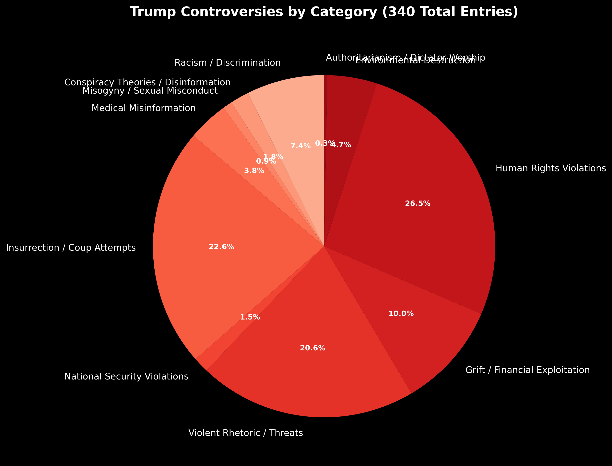
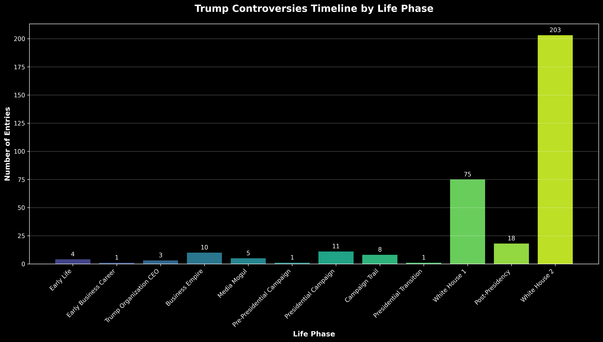
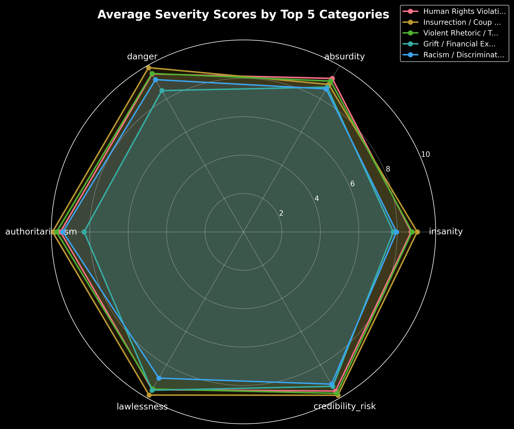
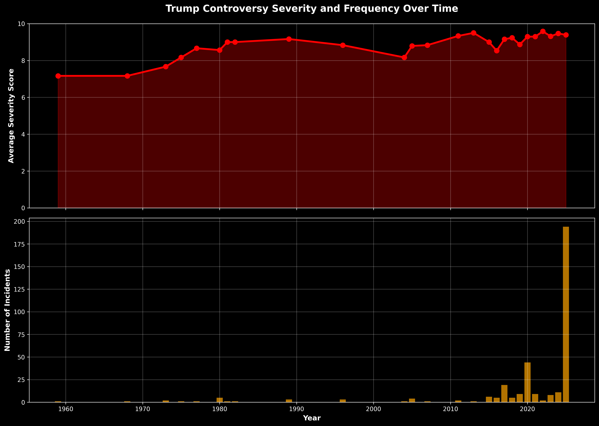
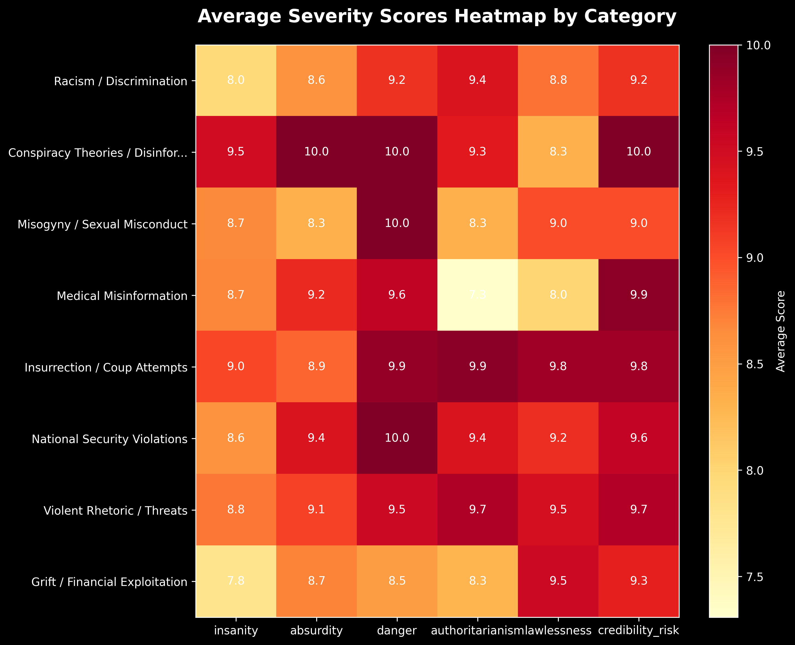
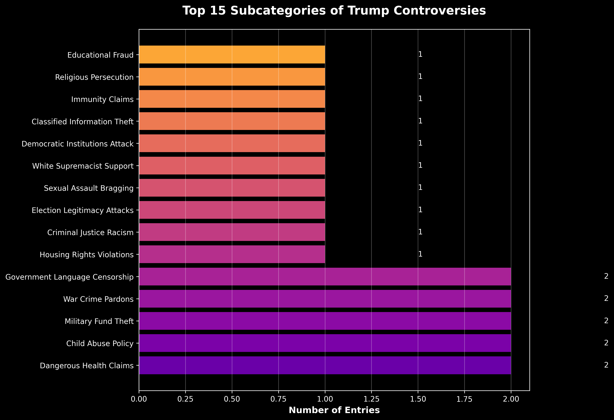
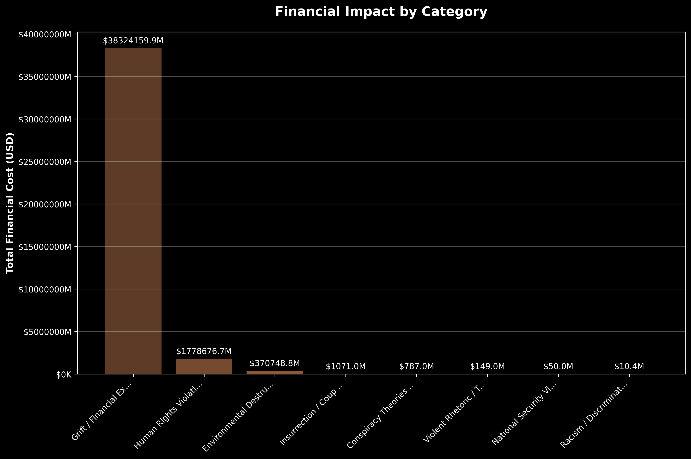
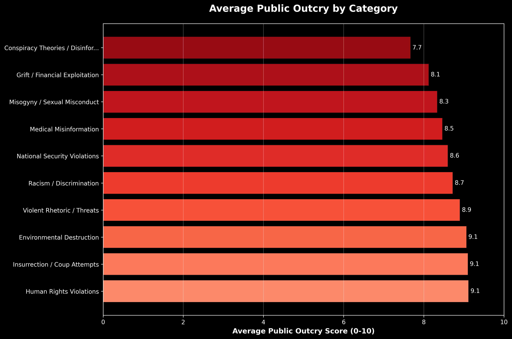

This pie chart reveals the breakdown of all 340 controversial incidents by category. Human Rights Violations dominate at 26.5%, followed by Insurrection/Coup Attempts (22.6%) and Violent Rhetoric/Threats (20.6%). Together, these three categories account for nearly 70% of all documented controversies.
This column chart shows the dramatic escalation of controversies over Trump's lifetime. The second presidency (White House 2) contains an unprecedented 203 entries (59.7% of all controversies) despite covering the shortest time period. This represents a massive acceleration in both frequency and severity of incidents.
This radar chart compares the top 5 categories across 6 severity dimensions: Insanity, Absurdity, Danger, Authoritarianism, Lawlessness, and Credibility Risk. Human Rights Violations and Insurrection attempts consistently score highest across most dimensions, indicating their particularly severe nature.
This dual chart tracks both the average severity (top) and frequency (bottom) of incidents over time. While severity remains consistently high (7-8 out of 10), the frequency shows a catastrophic spike in 2025, with over 200 serious incidents in a single year - more than the previous 60 years combined.
This heatmap provides a detailed view of how each category scores across different severity dimensions. Darker colors indicate higher severity. Human Rights Violations show consistently dark colors across all dimensions, indicating systematic and severe violations.
This horizontal bar chart breaks down the controversies into specific subcategories, revealing patterns in Trump's methods. The most frequent subcategories often involve systematic attacks on democratic institutions, marginalized groups, and constitutional norms.
This chart shows the staggering financial costs associated with Trump's controversies by category. The total impact of $40.48 trillion includes direct costs, market crashes, economic disruptions, and long-term systemic damage. Some individual categories show impacts in the hundreds of billions.
This chart reveals which types of controversies generated the strongest public reactions on a 0-10 scale. Interestingly, public outcry doesn't always correlate with severity, suggesting varying levels of public awareness, media coverage, or normalization of certain types of misconduct.
